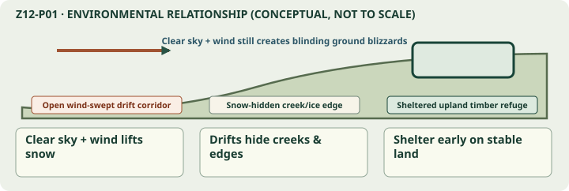

Z12-P01 · Extreme environments · Adapted historical material
Read wind, blowing snow and ground-blizzard visibility loss
Spot sudden ground-blizzard whiteouts and drifting hazards even under clear blue skies after snowfall stops.
When it applies · Upper Midwest plains, frozen lake margins, open corridors and winter woodland travel.
Equipment · Windproof outer layers, goggles/eye protection, map, compass and weather alerts.

Actions
- Scan downwind across open fields and lake edges for lifting snow plumes—strong winds can erase trails and create near-zero visibility without a single new snowflake falling.[E15, N07, E25]
- Inspect terrain edges for snow-hidden creek channels, slush overflow and drifted drop-offs rather than assuming a smooth white surface means firm ground.[E12, E25, N07]
- Move early into sound upland timber or substantial shelter before blowing snow erases landmarks and wind chill spikes.[E15, N07, E05]
Failure recognition · Stepping onto an open snow-swept corridor because snowfall ended, then losing all landmark contrast in blowing drift ten minutes later.[N07, E15, E25]
Verify · Confirm current visibility distance, wind direction and immediate wind-protected timber or building refuge before crossing open winter terrain.[N07, E15, ED]
Stop or change course · When blowing snow drops visibility or erases trail contrast, halt exposed travel on stable land, shelter from wind and avoid crossing frozen water.[N07, E12, E05]
Evidence and editorial notes
- E05 · NWS · What To Do If You're Caught in a Winter Storm (current web edition)
- Section: Outside and find shelter · Conditions: Cold, wet or windy winter conditions
Support: Block wind, stay dry and keep off cold ground. Keep exposure reduction separate from making a fire.
Limitations: Improvised windbreaks do not provide rated thermal protection or snow-load capacity. · Conflicting evidence: None; aligns with CDC-H.
Editorial note: Separates wind, ground, and moisture heat-loss pathways. · Specialist reviewer: Cold-weather shelter specialist
Primary source · checked 2026-11-24 - E12 · Minnesota DNR · Ice Safety (current web edition)
- Section: Ice Safety > basic precautions · Conditions: Minnesota ice edges and travel routes
Support: No ice is universally safe. Strength can differ over short distances; appearance or tracks alone cannot establish a safe crossing.
Limitations: Currents, springs, snow insulation, and freeze-thaw cycles weaken ice invisibly. · Conflicting evidence: None; mandates shore-bound detour for foundational walking parties.
Editorial note: Maintains strict separation from specialized B013 ice chapters. · Specialist reviewer: Ice safety and search and rescue
Primary source · checked 2026-11-24 - E15 · NWS · Cold Weather Safety (current web edition)
- Section: Cold Weather Safety > Wind Chill and Dressing for Cold · Conditions: Cold, windy conditions where exposed skin cools rapidly
Support: Wind removes the thin warm air boundary layer around skin and permeable fabrics, sharply accelerating heat loss and frostbite onset; windproof outer shells and sheltered microclimates mitigate convective loss.
Limitations: Wind chill charts apply to exposed skin and do not change freezing point of water or equipment. · Conflicting evidence: None; clarifies physical mechanism of convective heat loss.
Editorial note: Supports wind-block geometry, shell layering, and wind-chill risk decisions. · Specialist reviewer: Cold-weather shelter and meteorology
Primary source · checked 2026-11-24 - E25 · FEMA / Ready.gov · Winter Weather (current web edition)
- Section: Winter Weather > Stay Safe During Winter Storms · Conditions: Extreme cold, drifting snow, and power or travel disruption
Support: Prepare layered clothing, emergency shelter/heat alternatives, and vehicle winter kits; stay indoors during blizzards, protect against frostbite/hypothermia, and keep exhaust vents and exits clear of drifting snow.
Limitations: Drifting snow can block tent vents, doors, and vehicle tailpipes silently overnight. · Conflicting evidence: None; reinforces overnight exit/vent clearance checks.
Editorial note: Supports snow-drift exit maintenance and winter shelter failure recognition. · Specialist reviewer: Cold-weather shelter and emergency management
Primary source · checked 2026-11-24 - N07 · NWS · Fog Safety (current web edition)
- Section: Fog Safety > Visibility Loss and Travel Hazards · Conditions: Dense fog, valley mist, sea fog and blowing-snow whiteout
Support: Fog and whiteout collapse visual landmarks and depth perception rapidly, causing disorientation and unintentional terrain/traffic hazards; halt exposed travel early and rely on verified checkpoints or stay put.
Limitations: Compass bearings alone cannot reveal hidden cliffs, thin ice or drop-offs in zero visibility. · Conflicting evidence: Aligns with B014-P11 whiteout guidance.
Editorial note: Supports whiteout/fog stop thresholds and short-leg navigation boundaries. · Specialist reviewer: Meteorology and search and rescue
Primary source · checked 2026-11-24
Source lineage · B012-P03 wind/snow and NWS winter safety; adapted historical material · Classification · Adapted historical material.